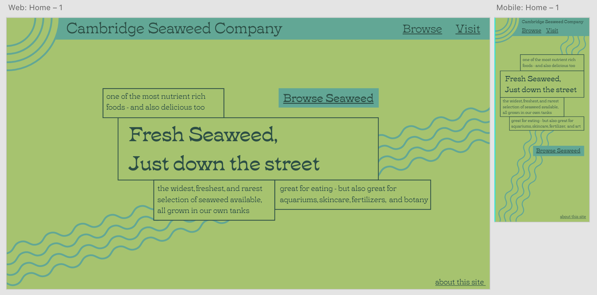

Name of the business or organization?
Cambridge Seaweed Company
What the business does (i.e., what is its product/service/mission)?
Cambridge Seaweed Company (CSC) grows a wide variety of seaweed in tank systems, supplying customers for purposes including aquariums, skincare, fertilizer, and food.
Who is the target demographic of the business?
CSC serves chefs, aquarium enthusiasts, gardners, and all individuals seeking seaweed.
How is the website going to help the business make money/be successful?
This website provides customers a location to find the services and location the CSC.
Sketch of home page design. This can be hand drawn and scanned or created digitally.
I wireframed the majority of the site in XD before transitioning to coding in Dreamweaver, as seen below.

What was the easiest part of this assignment?
Nothing ended up being easy, even the features I thought I could add instantly - so in the end, the easiest thing was letting my ambitions run too far.
What was the most challenging part of this assignment?
The most challenging part was realizing how hard responsive design is, and trying my best to adapt my designs to each size.